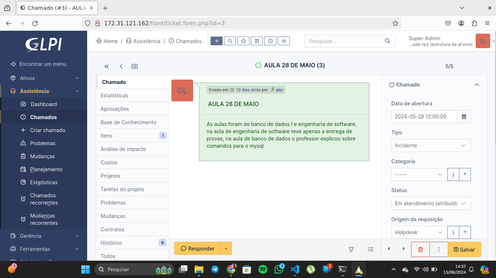
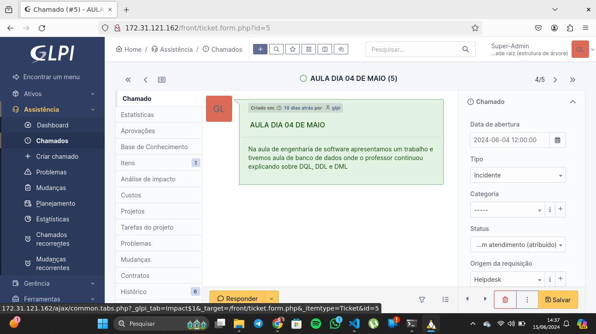
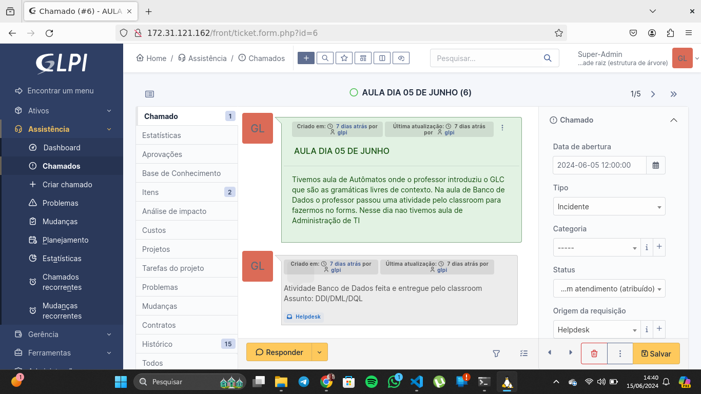
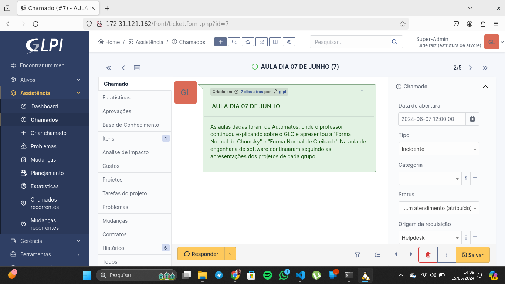
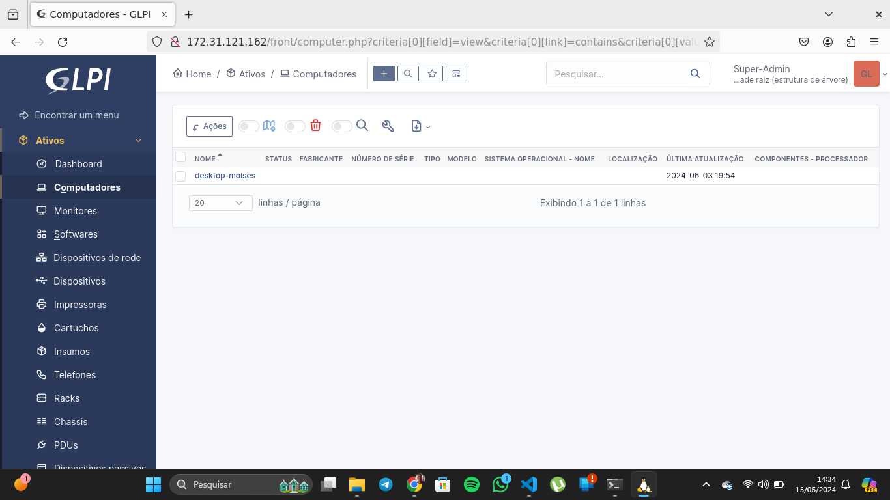
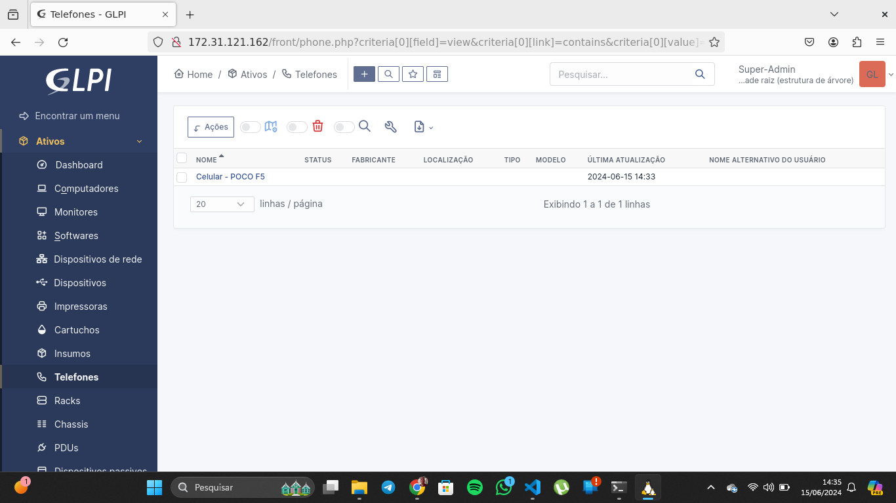
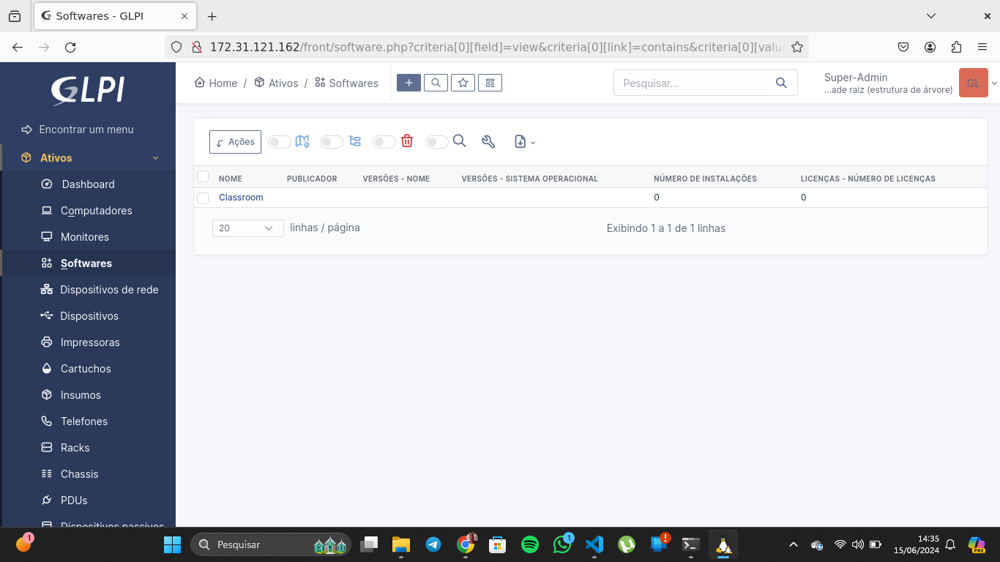
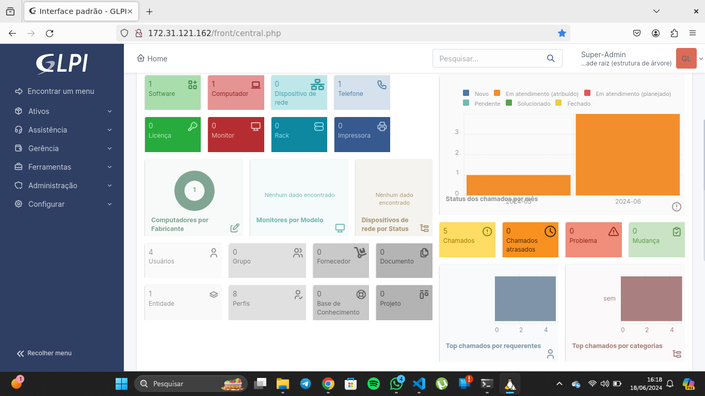

Instalação
A instalação do GLPI pode ser realizada em servidores Linux ou Windows
Passo 1: Preparar o Ambiente
- Atualizar o sistema
sudo apt update
sudo apt upgrade -y
- Instalar Apache, MariaDB e PHP
sudo apt install apache2 mariadb-server mariadb-client -y
sudo apt install php php-mysql php-xml php-mbstring php-gd php-curl php-cli php-zip -y
- Reiniciar o Apache
sudo systemctl restart apache2
Passo 2: Configurar o Banco de Dados
- Acessar o MySQL
sudo mysql -u root -p
- Criar um banco de dados e usuário para o GLPI
CREATE DATABASE glpidb;
CREATE USER 'glpiuser'@'localhost' IDENTIFIED BY 'strongpassword';
GRANT ALL PRIVILEGES ON glpidb.* TO 'glpiuser'@'localhost';
FLUSH PRIVILEGES;
EXIT;
Passo 3: Baixar e Instalar o GLPI
- Baixar a última versão do GLPI
wget https://github.com/glpi-project/glpi/releases/download/9.5.5/glpi-9.5.5.tgz
- Descompactar o arquivo baixado
tar -xvzf glpi-9.5.5.tgz
- Mover os arquivos para o diretório do Apache
sudo mv glpi /var/www/html/
- Alterar as permissões dos arquivos
sudo chown -R www-data:www-data /var/www/html/glpi
sudo chmod -R 755 /var/www/html/glpi
Passo 4: Configurar o Apache
- Criar um novo arquivo de configuração para o GLPI
sudo nano /etc/apache2/sites-available/glpi.conf
- Adicionar as seguintes linhas ao arquivo
<VirtualHost *:80>
ServerAdmin admin@example.com
DocumentRoot /var/www/html/glpi
ServerName example.com
<Directory /var/www/html/glpi>
Options FollowSymlinks
AllowOverride All
Require all granted
</Directory>
ErrorLog ${APACHE_LOG_DIR}/glpi_error.log
CustomLog ${APACHE_LOG_DIR}/glpi_access.log combined
</VirtualHost>
- Habilitar o novo site e reescrita de módulos
sudo a2ensite glpi.conf
sudo a2enmod rewrite
sudo systemctl restart apache2
Passo 5: Finalizar a Instalação pelo Navegador
- Acessar o GLPI via navegador
Abra o navegador e vá para http://seu_ip_ou_dominio.
-
Seguir as instruções de instalação
-
Remover o diretório de instalação
sudo rm -rf /var/www/html/glpi/install/install.php
Passo 6: Acessar o GLPI
- Acessar o painel de administração
Use o navegador para acessar http://seu_ip_ou_dominio e faça login com as credenciais padrão:
-
Usuário: glpi
-
Senha: glpi
Configuração
-
Alterar a Senha do Administrador
-
Navegue até
Configuração>Usuários. -
Clique em
glpie altere a senha. -
Categorias de Ativos
-
Vá para
Inventário>Tipose configure as categorias de ativos (e.g., Computadores, Impressoras, Software). -
Vá para
Inventárioe adicione ativos, preenchendo as informações necessárias para cada tipo de ativo.
Uso do GLPI
Gestão de Chamados
-
Abrir um Novo Chamado:
-
Vá para
Assistência>Chamados>Criar Chamado. -
Preencha as informações necessárias, como Título, Descrição, Categoria, Entidade, Solicitante, e Atribuído (técnico responsável).
-
Clique em Adicionar para salvar o chamado.
-
Acompanhamento de Chamados:
-
Acesse
Assistência>Chamadospara ver a lista de chamados. -
Clique em um chamado específico para ver detalhes, adicionar notas, e atualizar o status.
-
Fechamento de Chamados:
-
Após resolver o problema, atualize o status do chamado para Fechado e adicione um Solução.
Gestão de Inventário
-
Adicionar Novo Ativo:
-
Vá para
Inventário>Computadores(ou outro tipo de ativo, comoImpressoras,Software). -
Clique em
Adicionar. -
Preencha as informações do ativo, como Nome, Modelo, Número de Série, Usuário, Entidade, etc.
-
Clique em Adicionar para salvar o ativo.
-
Editar Ativos:
-
Navegue até
Inventário> selecione o tipo de ativo (e.g.,Computadores). -
Clique em um ativo específico para editar suas informações.
-
Relacionar Ativos:
-
Dentro da página de um ativo, você pode adicionar relacionamentos, como componentes adicionais, softwares instalados, ou periféricos.
Meus chamados
Aula dia 28 de maio

Aula dia 03 de junho
Aula dia 04 de junho

Aula dia 05 de junho

Aula dia 07 de junho

Meus ativos
Desktop - Moises

Celular - POCO F5

Software Classroom

Dashboard
